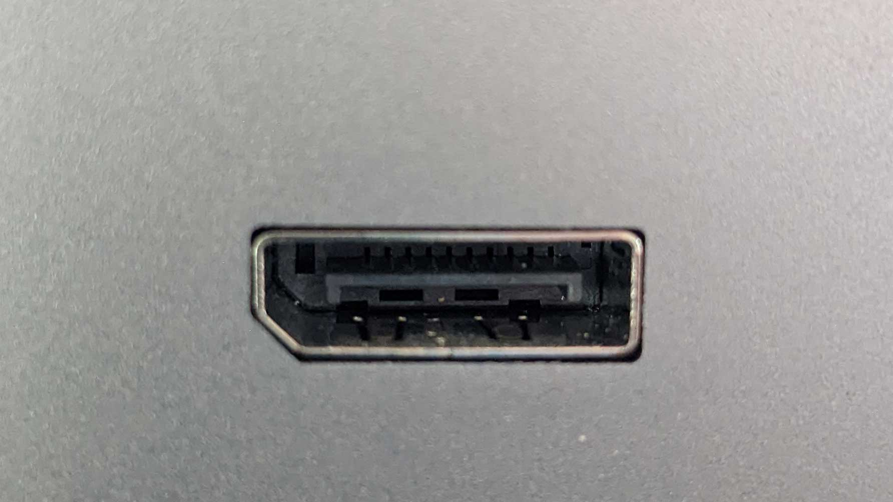

Que faut-il faire si l'écran est éteint ?
-
appuyer le bouton d’allumage sous l’écran,
s’il est toujours éteint :
-
Vérifier que le câble HDMI/VGA/DVI ou Displayport
est bien branché
câble dvi:
câble hdmi:
câble vga:
câble DisplayPort:
-
Vérifier que votre ordinateur personnel est bien allumé et que son câble
est bien branché avec son câble d’alimentation:
Normalement il ressemble au câble d'alimentation d'un ordinateur, comme celui là :

-
Vérifier si le cable est branché sur les DEUX ports,
il y en a un sur votre tour et un sur votre écran:
port dvi:
port hdmi:
port vga:
port DisplayPort:

-
Si cela ne fonctionne toujours pas,
achetez un nouveau câble adapté à vos ports et branchez le.
-
Si l’écran ne s’allume toujours pas faites vérifier par un professionnel que votre écran marche bien,
s’il ne marche pas faites le réparer sinon faites vérifier votre tour et si elle est belle et bien dysfonctionnelle faites la réparer.
-
Si l’écran ne fonctionne toujours pas vous devrez
probablement acheter un nouvel ordinateur.